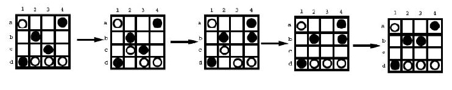
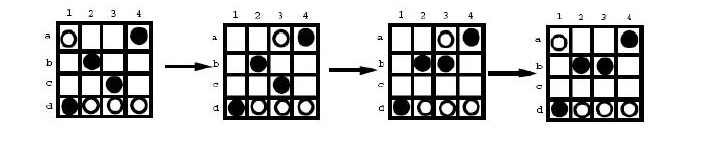

Home Page
F.A.Qs
Statistical Charts
Past Contests
Scheduled Contests
Award Contest
| Online Judge | Problem Set | Authors | Online Contests | User | ||||||
|---|---|---|---|---|---|---|---|---|---|---|
| Web Board Home Page F.A.Qs Statistical Charts | Current Contest Past Contests Scheduled Contests Award Contest | |||||||||
|
Language: A Board Game
Description Dao was a simple two-player board game designed by Jeff Pickering and Ben van Buskirk at 1999. A variation of it, called S-Dao, is a one-player game. In S-Dao, the game board is a 4 * 4 square with 16 cells. There are 4 black stones and 4 white stones placed on the game board randomly in the beginning. The player is given a final position and asked to play the game using the following rules such that the final position is reached using the minimum number of moves:
2. A stone can be moved horizontally, vertically or diagonally. A stone must be moved in a direction until the boarder or another stone is encountered. There is no capture or jump. 3. During each move, you need to move a stone of the right color. You cannot pass. An example of a sequence of legal moves is shown in the following figure. This move sequence takes 4 moves. This is not a sequence of legal moves  using the least number of moves assume the leftmost board is the initial position and the rightmost board is the final position. A sequence of moves using only 3 moves is shown below.  Given an initial position and a final position, your task is to report the minimum number of moves from the initial position to the final position. Input The first line contains the number of test cases w, w <= 6. Then the w test cases are listed one by one. Each test case consists of 8 lines, 4 characters per line. The first 4 lines are the initial board position. The remaining 4 lines are the final board position. The i-th line of a board is the board at the i-th row. A character 'b' means a black stone, a character 'w' means a white stone, and a '*' means an empty cell. Output For each test case, output the minimum number of moves in one line. If it is impossible to move from the initial position to the final position, then output -1. Sample Input 2 w**b *wb* *bw* b**w w**b *wb* *bw* bw** w**b *b** **b* bwww w**b *bb* **** bwww Sample Output 1 3 Hint Doing simple exhaustive search without planning ahead will most likely get you into troubles. Source |
[Submit] [Go Back] [Status] [Discuss]
All Rights Reserved 2003-2013 Ying Fuchen,Xu Pengcheng,Xie Di
Any problem, Please Contact Administrator